ΔPROBEPerformance · Risk · Optimization · Backtesting · Engine
A multi-indicator backtesting engine for TradingView. Choose an oscillator or moving average, configure entry/exit logic, layer in regime filtering and risk management, and read the results through a built-in diagnostic dashboard that recalculates live as you change settings.
What is ΔPROBE?
ΔPROBE is a strategy tester — a self-contained backtesting engine you drop on a chart to evaluate a rules-based long/short trading approach against historical price data, then tune it using a dashboard built specifically for that purpose.
It's not a signal service and it doesn't tell you what to trade. It's a parameterized framework: you choose an indicator, choose how that indicator should trigger entries and exits, choose how positions are sized and protected, and ΔPROBE simulates every trade that configuration would have taken historically — then breaks the result down across performance, risk, and validity so you can see why it performed the way it did, not just the final number.
Performance · Risk · Optimization · Backtesting · Engine — the five things the dashboard is built to surface: what happened, how risky it was, where the realistic tuning opportunity sits, whether the result holds up on unseen data, and a live engine that recalculates all of it on every parameter change.
Everything in this guide describes what the engine does and how to read it. None of it is a recommendation to trade any particular way.
ΔPROBE only works on standard chart types — line, bar, or candlestick. Heikin Ashi, Renko, Kagi, Point & Figure, Line Break, and Range charts substitute synthetic, calculated prices that were never actually traded, so the strategy detects this automatically and blocks all trading rather than produce unreliable results. See §12 for what you'll see if this happens.
Indicator Engine
One dropdown — Primary Indicator — controls every entry and exit signal in the strategy. Switching it re-routes the entire decision layer to a different oscillator or moving average; nothing else in the script needs to change.
In plain English: the indicator is the strategy's decision-maker. It watches price and produces a single reading each bar — how strong or weak momentum is, or how stretched price is from its average — and the strategy buys, sells, or holds based on where that reading sits relative to a signal line or a threshold you set.
| Indicator | What it measures | Use it for | Typical OB/Mid/OS | Lengths (1/2/Signal) |
|---|---|---|---|---|
| TSI | True Strength Index — double-smoothed price momentum, less choppy than raw RSI. | Catching sustained trend moves while filtering out short-term chop. | 42 / 0 / -42 | 5 / 2 / 2 |
| Stochastic | Standard %K/%D — where price sits within its recent range. | Spotting overbought/oversold turns in a range-bound or moderately trending market. | 80 / 50 / 20 | 5 / 3 / 2 |
| MACD | Convergence/divergence between a fast and slow EMA — trend momentum. | Catching the start of a new trend via moving-average crossovers. | set to a relevant +/- histogram value | 12 / 26 / 9 |
| CCI | Commodity Channel Index — deviation from a statistical mean; mean-reversion oriented. | Catching mean-reversion setups when price stretches unusually far from its average. | 100 / 0 / -100 | 20 / — / 3 |
| MFI | Money Flow Index — RSI weighted by volume. | Same job as RSI, but only counts moves backed by real volume — filters out low-conviction drifts. | 80 / 50 / 20 | 14 / — / 3 |
| RSI | Relative Strength Index — the classic momentum oscillator. | A simple, widely-understood momentum gauge that works reasonably well across most markets. | 70 / 50 / 30 | 14 / — / 3 |
| Williams %R | Close vs. the high/low range, scaled 0 to -100 (negative scale — set levels accordingly). | Same job as Stochastic, just faster-reacting and on a negative scale. | -20 / -50 / -80 | 14 / — / 3 |
| SMA | Simple moving average of price, with an EMA-smoothed signal line. Price-scale, not bounded. | A smooth, slower-reacting trend read — fewer false signals, later entries/exits. | n/a — ignored | 20 / — / — |
| EMA | Exponential moving average of price, with an EMA-smoothed signal line. Price-scale, not bounded. | A faster-reacting trend read than SMA — earlier signals, more whipsaw. | n/a — ignored | 20 / — / — |
| Entry SMA | Simple moving average of price, no signal line. Entry is price vs. the MA directly (State or Cross — see §4). | The simplest possible trend-following rule: be in the market only while price is on the right side of one moving average. | n/a | 20 / — / — |
| Entry EMA | Exponential moving average of price, no signal line. Same State/Cross behaviour as Entry SMA. | Same rule as Entry SMA, just faster to react to price moving across the line. | n/a | 20 / — / — |
Length 1 and Length 2 map to different things per indicator — for TSI they're the long/short EMA passes of the double-smooth; for MACD they're the fast/slow EMA; for CCI, MFI, RSI and Williams %R only Length 1 (the lookback) is used, and Signal is an EMA smoothing applied on top of the raw line. Hover the Length 1/2/Signal inputs in the script itself for the exact per-indicator mapping.
SMA / EMA vs. Entry SMA / Entry EMA — what's the difference?
SMA and EMA behave like the oscillators above: the moving average is the "Primary Value" and a second, EMA-smoothed line is the "Signal" — so you use the same Entry Signal dropdown (Above Signal Line, Cross above Signal, etc.) as you would for RSI or Stochastic.
Entry SMA and Entry EMA are simpler: there's no signal line at all. Entry is decided purely by price vs. the moving average, using a separate Entry SMA/EMA Trigger Mode dropdown (State or Cross — see §4). The main Entry Signal dropdown is ignored entirely in these two modes, and the exit is always a cross of price back through the MA regardless of what's chosen for Indicator Exit.
Overbought / Midpoint / Oversold levels have no effect in SMA, EMA, Entry SMA, or Entry EMA modes — these are price-scale, not bounded oscillators, so those three levels are ignored for entry/exit logic when one of these four is selected.
Trade Basis — Alternate Ticker
By default, ΔPROBE calculates its indicator and executes trades on the chart's own symbol. Use Alternate Ticker for Signals splits that apart: the indicator can watch one symbol while the strategy actually trades another.
This matters because not every symbol you want to trade has clean, low-noise price action to generate signals from. Three common uses:
1. Signal on the underlying, trade the leveraged product
Chart TQQQ, set Alternate Ticker to QQQ. TQQQ is a 3x leveraged product — its own price action is noisier and more prone to decay-driven whipsaw than the underlying it tracks. Running the oscillator off QQQ's cleaner price action, while still entering and exiting TQQQ, can produce a steadier signal than calculating directly from the leveraged instrument.
2. Signal via an inverse relationship, trade the inverse product
Chart SQQQ (the inverse of QQQ), set Alternate Ticker to 1/QQQ. Pine's request.security can evaluate a ratio expression like this directly, so the indicator effectively reads QQQ's price action inverted — meaning a "bullish" signal on 1/QQQ corresponds to QQQ falling, which is when you'd want to be long SQQQ.
3. Correlated ticker pairs
Some instruments move in a fairly stable relationship with another (e.g. a miner and the metal it mines, or a sector ETF and its bellwether stock). If one side of that pair gives cleaner technical signals than the other, Trade Basis lets you calculate off the cleaner one while trading the one you actually want exposure to.
Position sizing, stop loss, trailing stop, chandelier exit, and the Regime MA all still reference the chart's own close price — only the indicator's value/signal calculation is redirected to the Alternate Ticker. Risk management always reflects what you're actually holding.
Entry & Exit Signal Logic
Every entry and exit condition is either state-based (true for as long as the condition holds — can re-fire on the very next bar after an exit) or event-based (true only on the single bar the condition first occurs).
Long Entry Signal
| Option | Type | Behaviour |
|---|---|---|
| Above Signal Line | State | Indicator > signal line. Default. Re-enters immediately after an exit if still bullish. |
| Cross above Signal | Event | Indicator crosses up through signal line. Avoids immediate re-entry while indicator stays elevated. |
| Above Midline | State | Indicator > midline. Stricter — requires unambiguously positive momentum. |
| Cross above Midline | Event | Event-based equivalent of Above Midline. |
| Above Oversold | State | Wide entry zone — catches moves early but accepts more noise. |
| Cross above Oversold | Event | Catches recoveries from deeply oversold readings — less frequent, typically higher quality. |
Short Entry Signal mirrors this exactly on the downside (Below Signal Line, Cross below Signal, Below Midline, Cross below Midline, Below Overbought, Cross below Overbought).
Both Entry Signal dropdowns are ignored when Primary Indicator is Entry SMA or Entry EMA — those modes use the separate Entry SMA/EMA Trigger Mode dropdown instead: State (long while close > MA, short while close < MA — recommended when Regime Filter or No Short Zone are on, since those are multi-bar sustained-state filters that line up better with a state-based entry) or Cross (event-based, fires only on the bar price crosses the MA — a cleaner single signal, but easy to starve if paired with those same multi-bar filters).
Indicator Exit
Independent from the entry signal — Long Indicator Exit and Short Indicator Exit each choose which level, crossed in the adverse direction, closes the position: Off, Signal Line (earliest), Oversold/Overbought (latest, strongest confirmation), or Midline (balanced). Earlier exits are more responsive but generate more false exits; later exits give more room but can give back open profit.
In Entry SMA / Entry EMA mode, any Indicator Exit choice other than Off collapses to one rule: exit when price crosses back through the MA — since these modes have no signal line, oversold, midline, or overbought level to choose between. This applies even if the entry trigger mode is State.
Risk Management
Four independent mechanisms can close a position, each doing a different job. They can be combined — whichever fires first, fires.
Stop Loss
Always active, and it's the only exit that's regime-aware by design: a wider stop applies when the entry happens above the Regime MA (trend is confirmed — allow more room), and a tighter stop applies below it (trend unconfirmed — cut losses faster). Defaults: 4.0% above MA, 2.0% below MA for longs.
Trailing Stop — Fixed or Progressive
Fixed applies one trail % from entry to exit, measured off the highest close since entry. Simple and consistent.
Progressive is a four-tier system that automatically widens the trail as open profit grows — tight on trades that stall early, wide on the outlier trades that typically drive most of total PnL:
| Tier | Unlocks at open profit ≥ | Trail % |
|---|---|---|
| 1 | 0% | 10% |
| 2 | 15% | 13% |
| 3 | 35% | 15% |
| 4 (outlier) | 40% | 15% |
The tier ratchets up only — it never steps back down if open profit dips temporarily. Tier resolution uses the bar's high (matching how MFE is measured) so a trade that spikes 28% intrabar correctly unlocks Tier 2 even if that day's close only shows 12%; the stop level itself still trails off the highest close, avoiding intrabar whipsaw.
Chandelier Exit
A volatility-adjusted trail: stop = peakClose − (ATR × multiplier). Widens automatically in high-volatility conditions rather than using a fixed percentage — runs in parallel with the Trailing Stop when both are enabled, and whichever produces the more protective (higher) stop is the effective exit level. Default: 22-period ATR × 2.9 for longs.
No Short Zone
Two optional filters that block short entries even when the indicator signal is valid — designed to prevent shorting a brief, noise-driven dip below the Regime MA that recovers immediately:
- Spatial filter — requires close to sit meaningfully below the MA, not just a single tick under it:
close < (Regime MA − ATR × multiplier). Default multiplier 0.5. - Temporal filter — requires that spatial condition to hold for N consecutive days before a short is allowed (default 2), filtering out 1-day false breakdowns.
Short Margin Safety
With margin_short = 100%, a fully-deployed short triggers a margin call the moment price moves against you, because required margin grows with position value while equity is simultaneously falling. Short position size is automatically reduced so the margin-call threshold sits beyond your stop loss plus a safety buffer (default 5%) — gap events remain unpreventable in any backtester, but this formula covers normal adverse moves.
Regime Filter
One moving average (type and length both configurable — SMA/EMA/WMA, default SMA-200) used as a trend filter: Regime Filter — Longs only allows long entries while price is above it; Regime Filter — Shorts only allows short entries while price is below it. Both are independent toggles — enable either, both, or neither.
This same MA also sets the Stop Loss tier (above/below MA) and feeds the No Short Zone spatial filter, so turning it off doesn't remove those — it only removes the entry gating.
Capital Management
Two settings model a real trader's year-to-year behaviour rather than an unbroken compounding curve — worth understanding together, since most backtests default to a mode that quietly overstates real-world results.
Close Trades Before Year End
Force-closes any open position a configurable number of trading days before Dec 31 (default 4, ≈ Dec 27) — the purpose is tax-related: it settles the position within the calendar year rather than letting it roll into January, which matters for tax-loss/gain harvesting timing (T+1 settlement).
Reset to Initial Capital Each Year
ON — each year risks only the original initial capital again; profits made are treated as banked/withdrawn rather than reinvested. This models a trader who actually takes gains off the table each year, and it's the more conservative, arguably more realistic setting for judging whether a strategy holds up — full compounding tends to make early-years' edge look larger than it would feel with real capital at risk.
OFF (default) — full equity compounds forward year over year, the standard backtest assumption.
Require Fresh Signal After Year-End Close
Only relevant when Close Trades Before Year End is on. After that forced close, should the strategy immediately re-enter in January if conditions still technically hold (OFF — the trade essentially just continues under a new position), or wait for a genuinely new signal — the indicator dipping and then crossing back up — before re-entering (ON)? ON prevents what would otherwise look like one continuous trade being artificially split into two at the year boundary purely for tax accounting.
Turn all three on together to simulate a trader who banks profits annually, closes out ahead of year-end for tax purposes, and only re-enters on a genuinely fresh signal in the new year — the most conservative, real-world-behaviour combination the engine can model. Turn them all off to see the strategy's raw, fully compounding technical performance with no tax-driven interruptions.
Dashboard Tour
Seven panels, each answering a different question. All are independently toggleable and positionable.
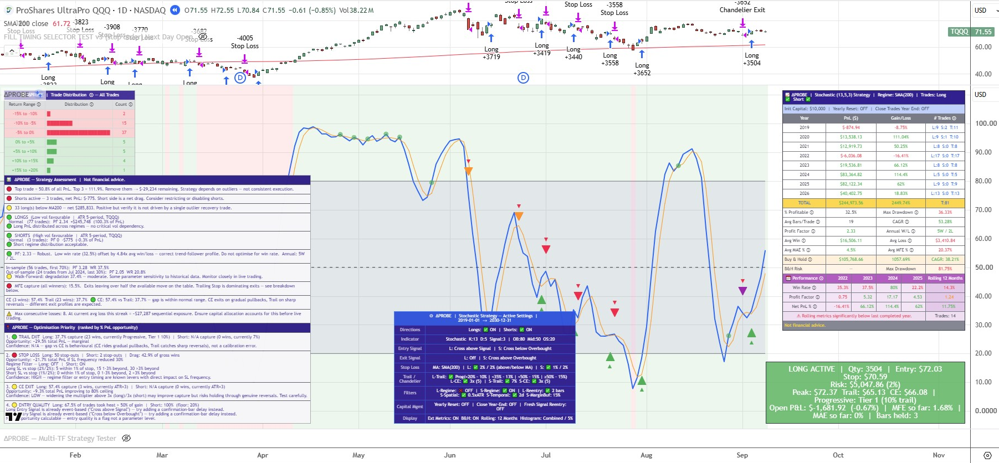
Every panel displayed together — TQQQ, Stochastic (13,5,3), 2019–2026
Oscillator Overlay & Signal Tooltips
With Show Indicator (Oscillator Overlay) on, the selected indicator plots in its own pane below the chart, alongside every buy/sell marker: a green triangle for a long entry, a red triangle for any exit (stop loss, trailing stop, chandelier, or indicator exit). Hovering any marker opens a full tooltip — reason, exit price, entry price, quantity, bars held, and $ / % gain-or-loss — so you can inspect any individual trade without leaving the chart.
This is independent of Show Chart Markers, which draws the same information price-anchored directly on the candles instead of in the oscillator pane — turn on either, both, or neither.
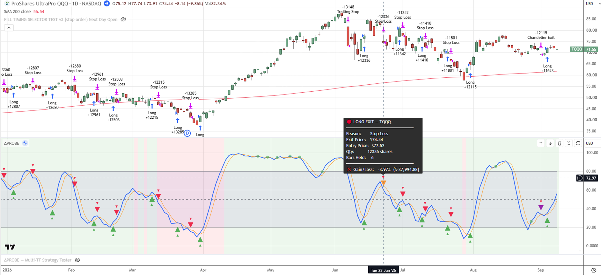
Yearly PnL Table
Year-by-year realized PnL in $ and %, trade counts (Long/Short/Total), and a summary row block: total PnL, % Profitable, Max Drawdown, Avg Bars/Trade, CAGR, and — if enabled — Extended Metrics (Profit Factor, Annual W/L, Avg Win, Avg Loss, Avg MAE%, Avg MFE%), a Buy & Hold comparison, and a Rolling Performance section (last 4 completed years side-by-side plus a rolling window, flagging whether recent performance is degrading vs. history).
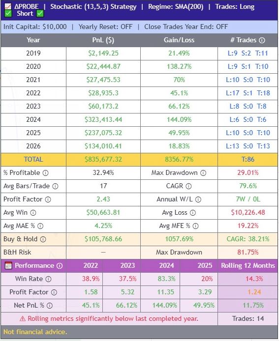
Active Trade Table
Only shows content while a position is open: entry price, stop level, dollar and % risk, current trail/chandelier levels, open P&L, MFE/MAE so far, bars held, and win/loss streak. Updates every bar.
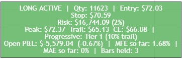
Trade Distribution Histogram
Buckets every closed trade's return % (bucket width configurable) and shows count + cumulative PnL per bucket, plus an Exit Reason breakdown (Stop Loss / Trailing Stop / Chandelier / Indicator Exit / Year-End / Other) with a plain-English recommendation on which exit type is dominating. This is the single best panel for seeing where your wins and losses actually cluster, rather than just an average.
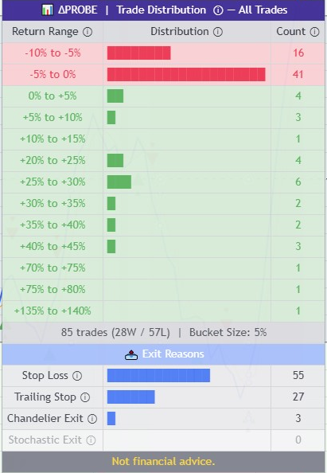
Strategy Assessment — Flags & Optimisation Priority
Ten plain-English health checks, colour-coded green/amber/red: direction enablement, top-trade concentration risk, long/short direction split, below/above-MA drag, loss scaling over time, volatility regime split (does performance depend on low/high-vol conditions), structure/profit-factor health, MFE capture (overall and per exit type — directly diagnoses whether CE or Trail is exiting too early), max consecutive losses, and a shorts-only-on-a-leveraged-instrument warning where relevant.
The same box continues straight into Optimisation Priority, ranking Stop Loss, Chandelier Exit, and Trailing Stop by realistic $ opportunity (not theoretical maximum), each against a fixed ceiling — CE 80%, Trail 45%, SL reduction 30% — so the tool can't claim "fix this for 100% more profit." Each lever also carries a confidence tag: Stop Loss is always HIGH confidence (regime filtering is a direct, known lever); CE/Trail widening is LOW confidence (a real trade-off against holding through genuine reversals, not a free improvement). Walk-Forward Validation (20+ trades) and Optimisation Priority (10+ trades) both require minimum trade counts before they display.
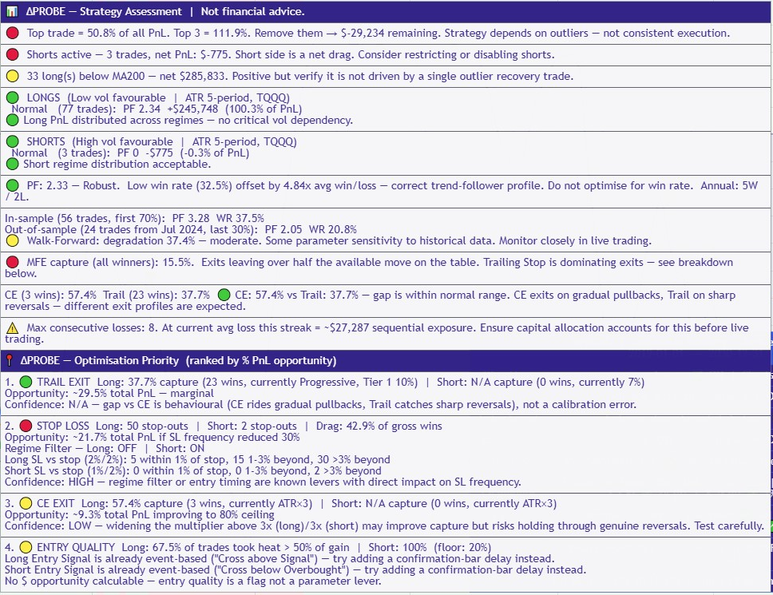
Strategy Description Box
A compact settings summary — directions enabled, indicator + entry/exit signal choice, stop loss/trail/chandelier configuration, active filters, and display toggles — all in one glance. Useful as a record of exactly what configuration produced a given backtest, without having to reopen the input panel.
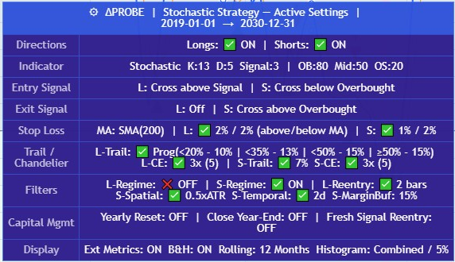
Settings Reference
Grouped exactly as they appear in the script's input panel.
Recommended Tuning Workflow
Why this specific order — Entry/Exit → Stop Loss → Chandelier → Trailing Stop, Long-only before Short-only before combined — outperforms tuning parameters in whatever order seems convenient at the time.
Why Entry/Exit first
Every downstream metric — the histogram's shape, Profit Factor, drawdown — is a measurement of what the exit mechanisms did to the trades the entry signal produced. If the entry/exit signal itself isn't sound yet, tuning Stop Loss, Chandelier, or Trailing Stop first means tuning risk parameters against noise, not against a real edge — and worse, a wide-enough stop or trail can visually mask a broken entry signal, hiding the problem instead of fixing it. Confirm the signal visually on the chart before touching anything else.
Why Stop Loss next
Stop Loss sets the floor — the maximum acceptable loss per trade. It's the foundation the other two exits sit on top of. Tune it before Chandelier or Trailing Stop because if it's too tight, it will fire before either of those mechanisms gets a chance to do its job; if it's too loose, no amount of later tuning on Chandelier or Trailing Stop can compensate for oversized losses baked in at the stop level.
Why Chandelier Exit next
With Stop Loss already settled, Chandelier's job becomes purely to protect open profit through normal volatility rather than also functioning as a backstop against a large loss. Tuning it in isolation — after the floor is fixed — makes its effect on the histogram's win-side buckets much easier to attribute cleanly to Chandelier itself, rather than to an interaction with a still-unsettled Stop Loss.
Why Trailing Stop last
Trailing Stop (especially Progressive) is the fine-tuning layer — its whole purpose is capturing more of the tail end of a winning move once Stop Loss and Chandelier already define the baseline risk/reward. Tuning all three simultaneously turns this into a three-variable search where it's genuinely hard to tell which change caused which effect; tuning them in sequence keeps each step attributable.
Why Long-only, then Short-only, then combined
Long and Short trades typically have very different distribution shapes — every example in §11 shows this, with Shorts usually contributing far fewer trades and different regime sensitivity than Longs. Tuning both directions together from the start means a change to Long-side risk parameters can quietly offset or mask a Short-side problem in the combined metrics, making it unclear which side actually improved. Isolating each direction, confirming it individually against the Histogram, then re-combining and reconciling, keeps the attribution honest.
Reading the Histogram while tuning
The signature of an exit mechanism doing its job, rather than being over-fit to the specific history tested, is a visible compression of the loss-side buckets and/or a rightward shift in trade outcomes — without meaningfully hollowing out the win-side tail. If a tuning change makes the histogram narrower on both sides at once, that's a sign of tightening exits generally rather than improving them specifically.
Worked Example — SPY, Williams %R
1. Baseline — nothing tuned. Williams %R (21,5), Long and Short both enabled, no Stop Loss, Trailing Stop, or Chandelier Exit active for Longs — the indicator signal is the only thing closing a trade. Over 2019–2026 this produced 317 trades — wildly excessive — for just $6,595 net (65.95%), a 1.28 Profit Factor and 6.81% CAGR, badly trailing SPY's own buy-and-hold return of 200.42% (15.62% CAGR) over the same window. This is the exact failure mode the method warns about: an unconfirmed, over-sensitive signal generating noise, not edge.
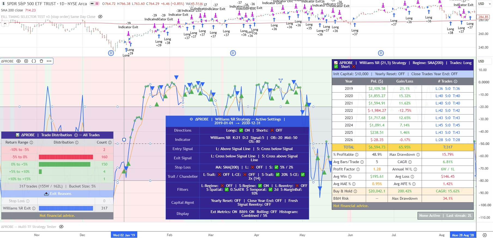
2–8. Confirm the signal, switch to Long-only, then tune Stop Loss → Chandelier → Trailing Stop using the Histogram. Lengthening Williams %R to (42,8) and restricting to Long-only trades cut the count from 317 to 47 on its own — most of the original noise was coming from an over-sensitive signal and the Short side. With Stop Loss (4%/2%), a Progressive Trailing Stop, and a 3×(5) Chandelier Exit then switched on and actually doing work — the Exit Reasons breakdown flips from 317 indicator-only exits to 22 Stop Loss, 2 Trailing Stop, and 23 Chandelier exits — Profit Factor rose to 2.28 and total return to $19,022 (190.22%). Reading the Histogram at this stage: the red (losing) bars cluster almost entirely in the -5% to 0% bucket with only a small -10% to -5% tail, and the green (winning) bars stretch out to +25–30%, mostly closed via Chandelier or Trailing Stop rather than the raw signal — exactly the shape the method describes as the signature of exits doing their job.
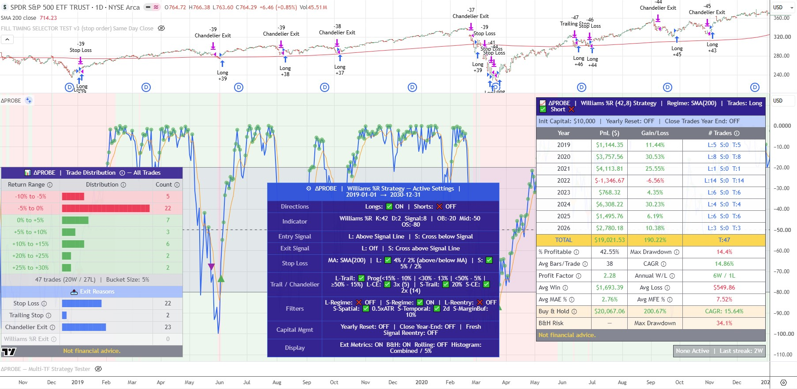
9. Short-only, tested and disabled. Running the same process on the Short side alone showed it dragging on overall PnL rather than adding to it — a common outcome on a broad index like SPY, which has a persistent long-term upward drift. Shorts were switched off entirely rather than force-tuned into profitability.
10. Final result. One more refinement pass — lengthening the signal component to (42,20), tightening Stop Loss back to 2%/2%, and disabling Trailing Stop entirely in favor of Chandelier Exit alone as the trailing mechanism — brought the count down to 39 trades and Profit Factor up to 2.96, with total return at $20,452.65 (204.53%) against a 15.58% CAGR — finally, narrowly, ahead of this run's SPY buy-and-hold (200.67%, 15.64% CAGR). The margin is modest, deliberately: SPY buy-and-hold is a genuinely hard benchmark to beat by a wide margin, and a realistic worked example should show that rather than overstate it.
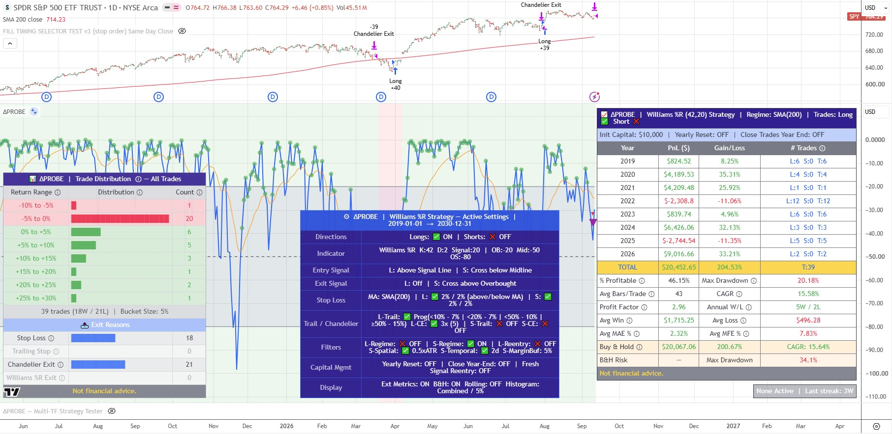
The final Assessment box keeps the result honest: top 3 trades are 62.7% of total PnL (moderate concentration, not extreme), Walk-Forward shows out-of-sample Profit Factor (4.75) well ahead of in-sample (2.12), and Optimisation Priority still flags Chandelier Exit as the top remaining lever (~56% opportunity, low confidence) followed by Stop Loss (~13%, high confidence) — plus an Entry Quality flag noting the entry still fires immediately on "Above Signal Line" with no confirmation, meaning there's room left even after this full tuning pass.
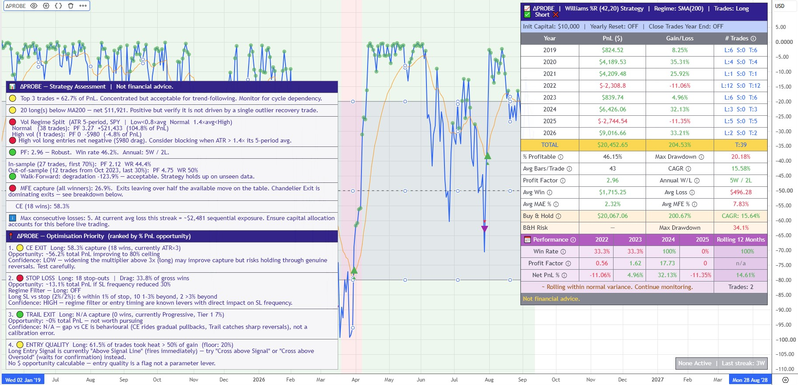
Trade Basis — Configuration Recipes
Complete, final configurations for each Trade Basis pattern from §3 — settings plus the resulting performance, so each pattern is concrete rather than abstract.
Example 1 — TQQQ, Direct (no Alternate Ticker) · Same-Day Execution
This is the simplest Trade Basis case: TQQQ traded directly, no alternate signal ticker. Backtested 2019–2026 with Stochastic (13,5,3), both Longs and Shorts enabled, a Progressive Trailing Stop, and a 200-day SMA regime filter (Shorts only), the strategy closed 85 trades for a net $836,404 (8,364%) on a $10,000 starting balance — a 79.7% CAGR at a 2.43 Profit Factor. The histogram shows the shape behind that number: a 32.9% win rate carried by a long tail of outsized winners (up to +135–140%), against a dense cluster of small losses in the -5% to 0% range (41 trades alone in the -5% to 0% bucket) — a classic trend-follower profile, not a high-hit-rate one.
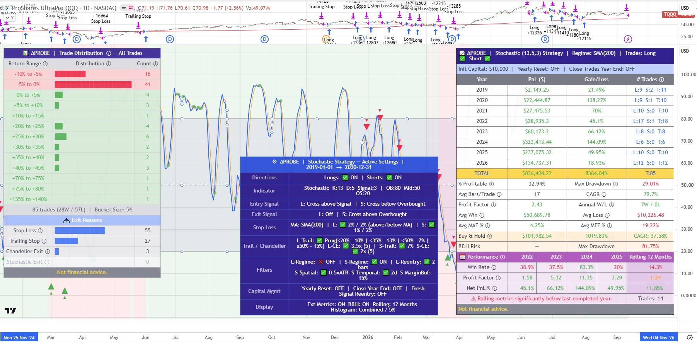
The Assessment box is where the caveats live. The single best trade accounts for 49.3% of all profit, and the top 3 account for 93.5% — remove them and ~$54,226 remains, so this specific result leans heavily on a handful of outlier moves rather than broad, repeatable edge. Walk-Forward validation shows 56.2% degradation between in-sample and out-of-sample periods (🟡 moderate, not 🔴 failing, but worth watching), and Optimisation Priority flags Stop Loss as the highest-opportunity lever — 53 long and 2 short stop-outs are dragging 41.1% of gross wins, with an estimated ~20.2% of total PnL recoverable by reducing SL frequency (the Long Regime Filter is currently OFF, Short is ON).
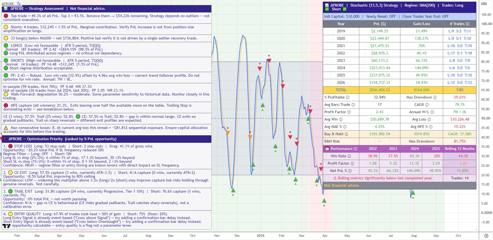
Example 2 — TQQQ, RSI (14,14), Long-only, Next-Day Execution
Example 2 pairs TQQQ with a different indicator — RSI (14,14), Long-only (Shorts disabled), the same 200-day SMA regime filter and 2019–2026 window as Example 1. Under this configuration the strategy closed 56 trades for $711,897 net (7,119%) — a 74.4% CAGR at a 2.74 Profit Factor, roughly half Example 1's trade count but a notably higher win rate (51.8% vs. 32.9%), since a Long-only RSI setup removes the short-side noise entirely.
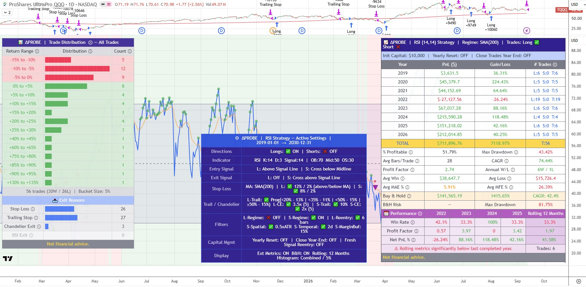
Order execution delay lives in TradingView's own Strategy Properties dialog (Properties tab → Broker Emulator), not in the script's input panel. Setting it to One tick delays order fills slightly rather than assuming an instant fill at the exact signal price — a more conservative execution assumption, closer to what a next-day-open fill would actually look like, worth knowing about separately from anything ΔPROBE itself controls.
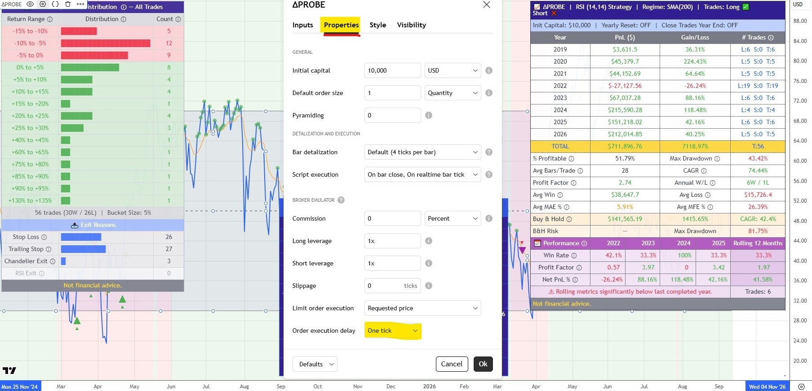
The Assessment box again keeps the number honest: the single best trade is 51.5% of all profit and the top 3 are 96.9% — remove them and ~$22,350 remains, so concentration risk persists even with a completely different indicator and direction setup. The encouraging signal here is Walk-Forward validation: out-of-sample Profit Factor (2.78) actually exceeds in-sample (2.58) — a rare 🟢 "holds up on unseen data" verdict, in contrast to Example 1's degradation. Optimisation Priority again ranks Stop Loss as the top lever (21 stop-outs dragging 36.5% of gross wins, ~14% total PnL opportunity if the currently-OFF Long Regime Filter were enabled), and separately flags Entry Quality: RSI's Above Signal Line entry fires immediately with no confirmation, and switching to Cross above Signal or Cross above Oversold would wait for the signal to actually turn before entering.
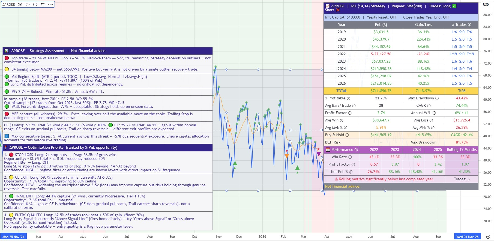
Example 3 — QQQ, Stochastic (5,5,5): Same-Day vs. Next-Day Execution
Example 3 isolates a single variable: order execution timing. Same strategy, same ticker, same every other setting — QQQ with Stochastic (5,5,5), Long+Short, a 200-day SMA regime filter (Shorts only), and a Progressive Trailing Stop — run twice: once with the default same-bar-close fill ("Same-Day"), and once with TradingView's Order Execution Delay pushing every fill to the next bar's open ("Next-Day"). Same-Day closed 47 trades for $48,259 net (482.6%) — a 26.4% CAGR at a 3.12 Profit Factor, with a 34.8% win rate carried by a 5.84x average win-to-loss ratio.
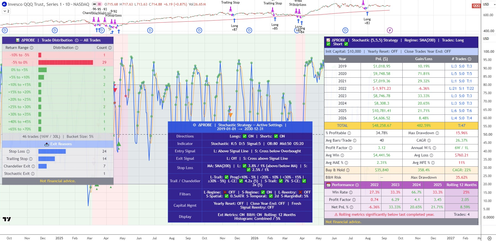
The Same-Day Assessment box shows a healthy structure: Profit Factor 3.12 is rated Robust, and Walk-Forward degradation of just 10.6% earns a 🟢 "holds up on unseen data" verdict. Optimisation Priority puts Chandelier Exit at the top of the list here — a different lever than Example 1 or 2 flagged — with 41.1% capture on winners against an 80% ceiling, representing an estimated ~41% of total PnL as (low-confidence) upside if that exit could be improved; Stop Loss is the second lever, at an estimated 11.3% opportunity.
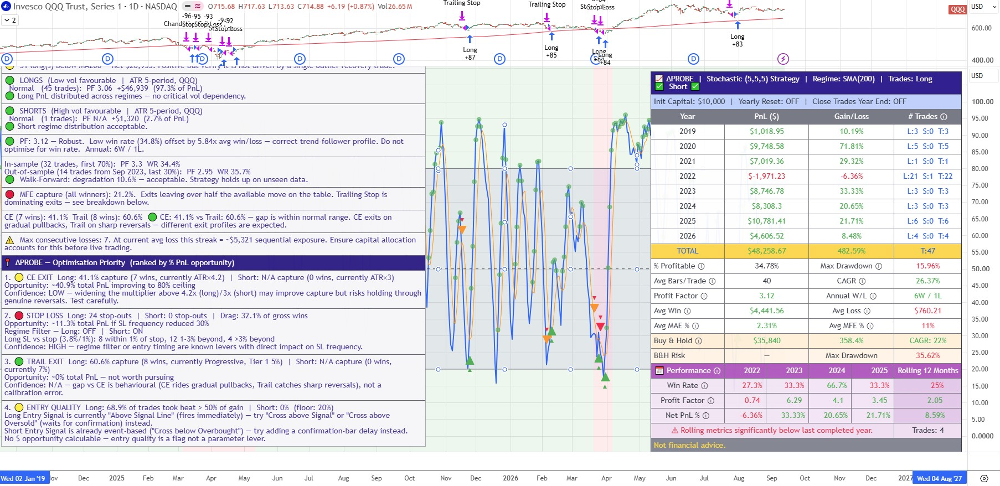
Next-Day execution — same settings, only the fill timing changed — closed 50 trades (3 more than Same-Day) for $31,333 net (313.3%): a 20.9% CAGR at a 2.70 Profit Factor. Total profit dropped roughly 35% despite the extra trades, because giving up the signal bar's close for the following day's open costs real edge on average: Avg Win fell from $4,442 to $2,618 (nearly halved) while Avg Loss only fell from $760 to $614, compressing the win/loss ratio from 5.84x down to 4.27x. Max Drawdown was almost identical either way (15.96% vs. 15.95%) — the risk profile didn't change, only the average efficiency of each trade.
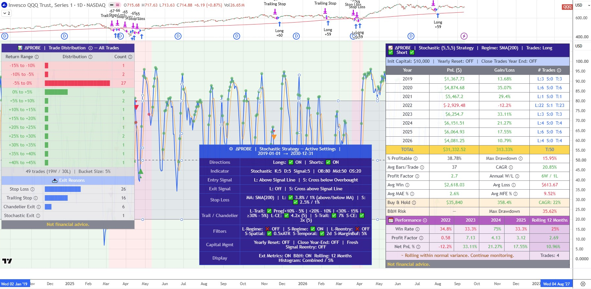
The Next-Day Assessment box tells a similarly healthy story on validity — Walk-Forward degradation is actually negative (-28%), meaning out-of-sample Profit Factor (3.1) exceeded in-sample (2.42) — and the same two levers top Optimisation Priority (Chandelier Exit ~36.8% opportunity, Stop Loss ~13.5%). The takeaway: this strategy's edge is meaningfully sensitive to execution timing — worth knowing before assuming a backtest translates directly into a live, next-bar-filled result.
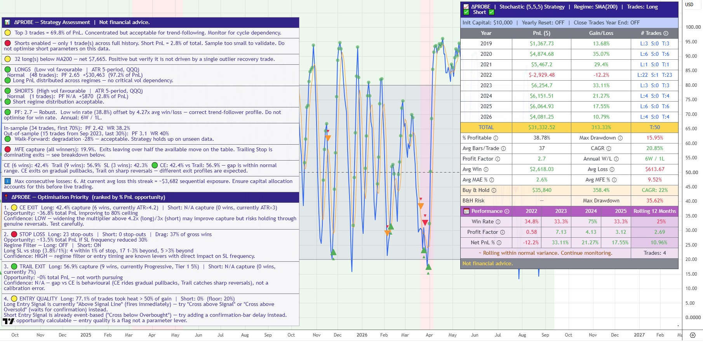
Example 4 — SQQQ via Alternate Ticker (100/NASDAQ:QQQ) · Inverse Pattern
Example 4 demonstrates the inverse Trade Basis pattern from §3: SQQQ traded directly, with the indicator instead calculating off 100/NASDAQ:QQQ — a mathematically inverted, rescaled version of QQQ's price, so a "bullish" reading on that basis corresponds to QQQ falling, which is exactly when you'd want to be long SQQQ. Shorts are disabled here — shorting an already-inverse, decay-prone instrument compounds structural drag, so it's tested Long-only, with the Regime Filter for Longs turned ON.
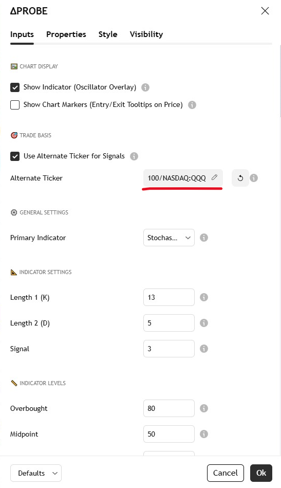
Across the full 2019–2026 window, the strategy only found conditions to trade in 2022 — the one year in that span QQQ was in a sustained decline — closing 6 trades for $5,452.50 (54.5%) at a 66.7% win rate and 3.52 Profit Factor, with an 8.7% max drawdown. Every other year shows zero trades: the Long Regime Filter, evaluated on this inverted basis, simply wasn't satisfied outside that one downtrend. For comparison, buy-and-hold on SQQQ itself lost 334% over the same window — a stark illustration of inverse-leveraged decay in a mostly-rising market — so even a small handful of well-timed entries meaningfully outperformed passively holding the instrument.
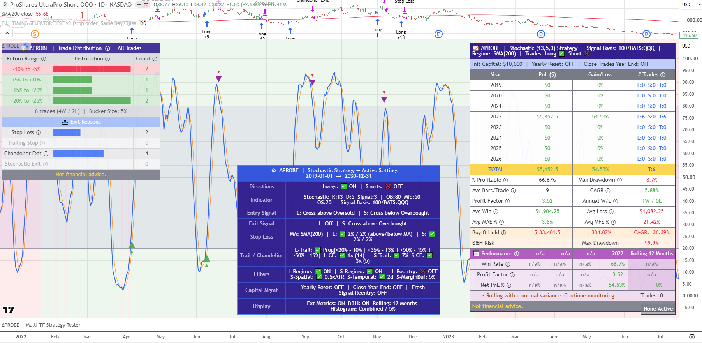
With only 6 closed trades, this example sits well below the 10- and 20-trade minimums for Optimisation Priority and Walk-Forward Validation, so neither section renders — exactly the gating behaviour described in §08 and the FAQ, shown here in practice rather than just asserted. What the Assessment box does show: the top trade alone is 47.9% of all profit and the top 3 trades are 118.7% of it — removing them would leave the strategy at a net loss (-$1,018), underscoring how thin a 6-trade sample really is. Chandelier Exit captured 52.2% of the available favorable move across its 4 winning exits, and the single losing streak (1 trade) kept sequential exposure low at ~$1,082.
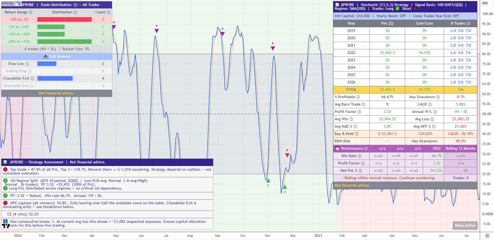
Example 5 — META, EMA (200,50), Pure Signal Only (No SL / Trail / Chandelier)
Example 5 deliberately strips the strategy down to its simplest possible form: META with an EMA(200,50) crossover — enter when price is above the 50-period signal line, exit when it crosses back below — and nothing else. No Stop Loss, no Trailing Stop, no Chandelier Exit; the Indicator Exit is the only thing that ever closes a position, paired with Next-Day order execution. This pure signal-only approach closed just 3 trades since 2019 for a net $32,658 (326.6%) — a 21.4% CAGR at an extraordinary 30.09 Profit Factor — comfortably ahead of META's own buy-and-hold return over the same period (285.76%, 19.83% CAGR) despite trading a tiny fraction as often, and with a lower max drawdown than buy-and-hold too (16.84% vs. 76.74%).
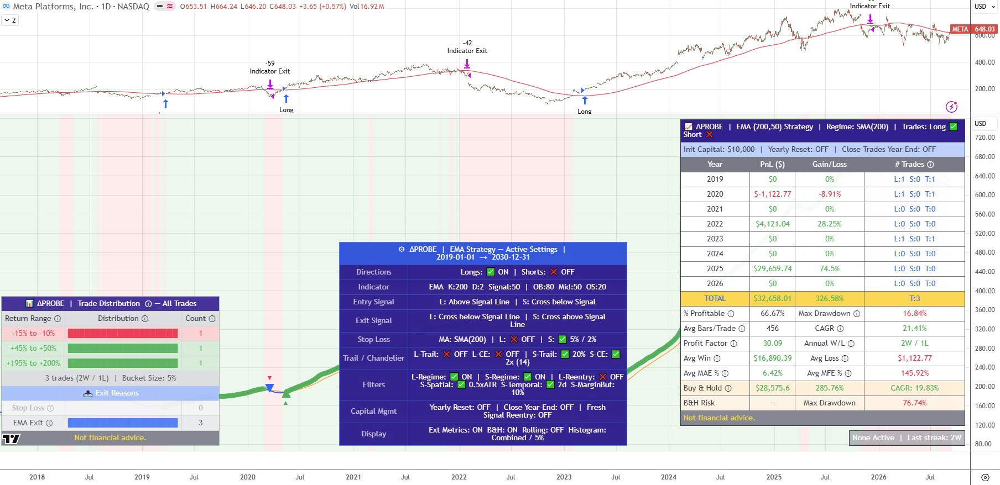
That headline number needs the Assessment box's context, though: with only 3 trades, the top trade alone is 90.8% of all profit and the top 3 are 103.4% of it — remove them and the strategy is actually slightly negative (-$1,123). This is the extreme case of the concentration risk flagged throughout every other example in this section: a strategy that trades this rarely lives or dies on whether it happens to catch one or two genuinely enormous moves, and 3 trades is far too small a sample to draw real confidence from — Optimisation Priority and Walk-Forward Validation both stay hidden here for exactly that reason. All three exits fired via the EMA signal line itself — the histogram's Exit Reasons breakdown shows zero Stop Loss, Trail, or Chandelier exits, 3 for 3 Indicator Exit — capturing 42.8% of the available favorable move on average.
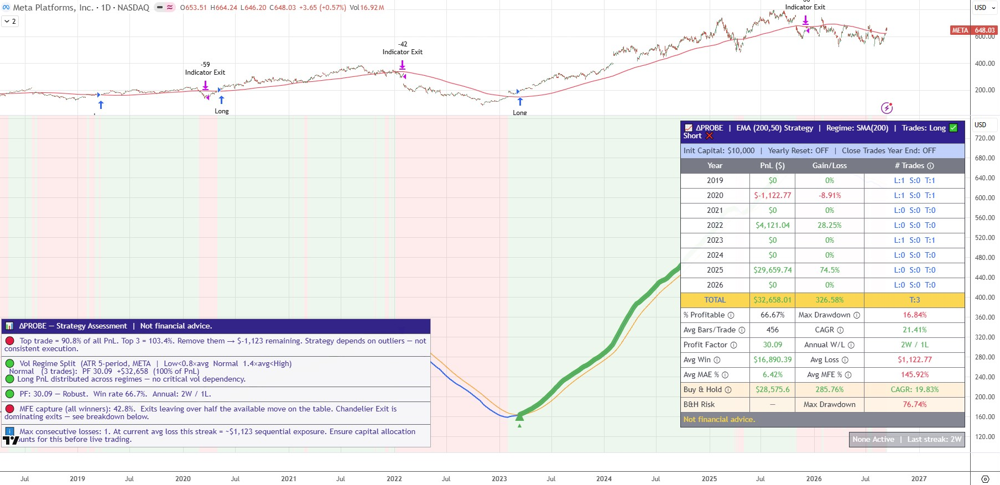
FAQ & Troubleshooting
My entry signal looks valid on the chart but no trade fired
Check, in order: is a position already open (a new entry requires no existing position)? Is the Regime Filter blocking this direction? For shorts — is the No Short Zone spatial or temporal filter blocking it? Did a stop-loss exit just happen and re-entry suppression is still counting down? For high-priced instruments specifically, see the next question — it's a common, separate cause.
No trades fire at all on a high-priced instrument (e.g. BTCUSD)
ΔPROBE doesn't support fractional-share position sizing — it needs at least one whole unit of the instrument to fit within your Initial Capital. If one unit costs more than your Initial Capital (a single BTCUSD often trades well above the script's $10,000 default), no order can be sized and nothing fires. This isn't a ΔPROBE input — Initial Capital lives in TradingView's own Strategy Properties dialog (Properties tab → General → Initial capital). Raise it comfortably above the instrument's price and re-run.
The strategy shows an "Unsupported Chart Type" warning and won't trade
ΔPROBE only works on standard chart types — line, bar, or candlestick — where close/high/low reflect real, tradeable prices. Heikin Ashi, Renko, Kagi, Point & Figure, Line Break, and Range charts substitute synthetic, calculated prices that were never actually traded; using those for stop levels, trailing stops, and fills would produce backtest results you couldn't achieve live. The strategy detects this automatically and blocks all trading — switch to a standard chart type to run it.
Why is my short position size smaller than I expected?
Short Margin Safety intentionally reduces size so the margin-call threshold sits beyond your stop loss plus buffer — see §5. This is deliberate, not a bug.
Walk-Forward / Optimisation Priority sections aren't showing
Minimum trade-count gates: 20 closed trades for Walk-Forward, 10 for Optimisation Priority. Below that, the numbers are unreliable enough that the script hides them rather than showing a misleading verdict.
My Trailing Stop and Chandelier Exit never seem to fire
Check Trailing Stop Mode isn't set to Off while Chandelier Exit is also disabled — that combination leaves only Stop Loss and Indicator Exit as exit mechanisms.
Yearly PnL % looks different after I toggled "Reset to Initial Capital Each Year"
That's expected — the % denominator changes (initial capital vs. compounding equity), not the underlying trades. See §7.
The dashboard tables are overlapping or cut off
Adjust position and font size per table independently. Row count grows automatically as you enable more optional sections (Extended Metrics, Buy & Hold, Rolling Performance) — a smaller font or a different anchor corner usually resolves overlap with other panels.
More questions will be added here as they come up.
For personal use only. Do not redistribute, resell, or publicly repost this document.